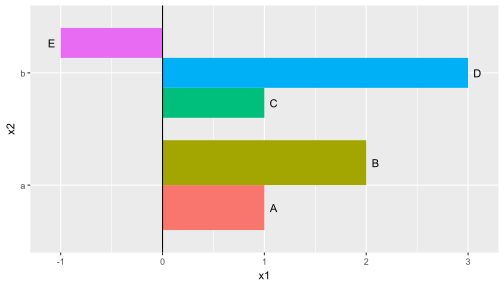
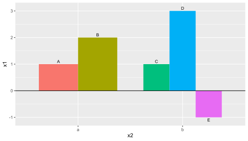
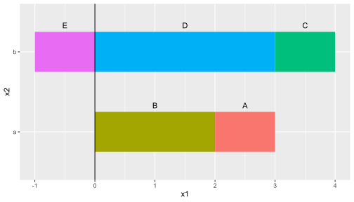
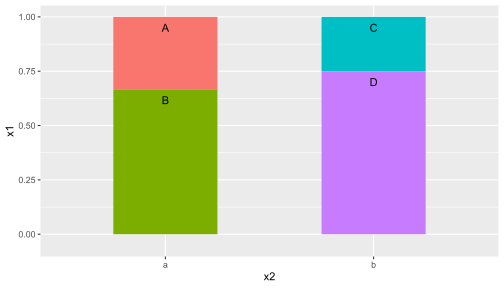
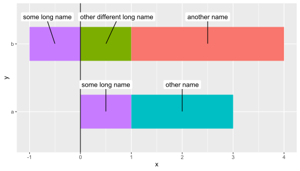
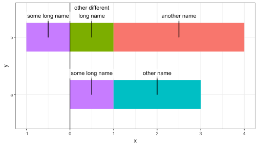
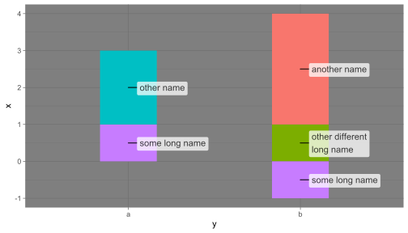
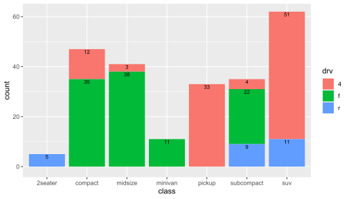
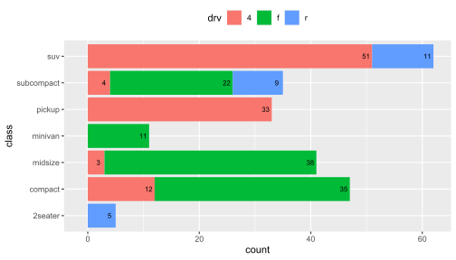

In this page code chunks are “folded” so as to decrease the clutter when searching for examples. Above each plot you will find a small triangle followed by “Code”. Clicking on the triangle “unfolds” the code chunk making visible the R code used to produce the plot. Except for the loading of packages shown in section Preliminaries code examples are in most cases self contained. When they are not, this is indicated by a comment.
For simplicity, whenever possible I use base R functions instead of contributed R packages. For those packages used only in specific examples I use colon notation to indicate the ‘package’.
All “words” defined in base R or in extension packages are linked to the corresponding HTML-rendered help pages.
The code in the chunks can be copied by clicking on the top right corner, where an icon appears when the mouse cursor hovers over the code listing.
Data labels and plot annotations
Data labels add textual information directly related to individual data “points”, in this case bar and column segments (shown as glyphs). Text position in this case is dependent on the scales used to represent data. Text is frequently displaced so that it does not occlude important plot components and when the link to the bar or column is unclear, this link is signaled with a line segment or arrow. Data labels are distinct from annotations in that they contribute directly to the representation of data on a plot or map.
Postion functions
In column and bar plots, and more generally when either x or y is a discrete factor very frequently functions position_stack(), position_fill(), position_dodge(), position_dodge2() or position_jitter() are used to modify the location of the bars, columns or other geometries. The creates a difficulty because we usually would like to nudge the position of labels. This can be achieved with new position functions from ‘ggpp’.
An additional consideration is keeping in data suitable coordinates for drawing a connecting segment or arrow between the displaced bar and an additionally nudged position for the label or text.
All the position functions described in this section are compatible with most geometries from ggpplot2 and extensions. However, only those from packages ‘ggpp’ and ‘ggrepel’ (> 0.9.1) plot segments and arrows linking original and displaced positions as saved by these position functions.
Preliminaries
The code used is shown on-demand above each plot and can be copied. We first load the packages we will use.
When package ‘ggpmisc’ is loaded and attached, packages ‘ggpp’ and ‘ggplot2’ are also attached. The only function from ‘ggplot2’ that is redefined by ‘ggpp’ is annotate(), which remains backwards compatible with ‘ggplot2’.
Bar and column plots
Simple examples
Some simple artificial data.
Code
df <- data.frame(x1 = c(1, 2, 1, 3, -1),
x2 = c("a", "a", "b", "b", "b"),
grp = c("A", "B", "C", "D", "E"))The first few examples are graphically very simple, but very difficult to create within ‘ggplot2’ without manual tweaking. The combined position functions from ‘ggpp’ simplify the use of data labels together with stacked or dodged columns and bars.
Code
ggplot(data = df, aes(x1, x2, group = grp)) +
geom_col(aes(fill = grp), width = 0.8,
position = position_dodge()) +
geom_vline(xintercept = 0) +
geom_text(
aes(label = grp),
position = position_dodgenudge(x = 0.09,
direction = "split",
width = 0.8)) +
theme(legend.position = "none")
After swapping the x and y mappings, we need to also adjust the arguments used for nudging.
Code
ggplot(data = df, aes(x2, x1, group = grp)) +
geom_col(aes(fill = grp), width = 0.75,
position = position_dodge(width = 0.75)) +
geom_hline(yintercept = 0) +
geom_text(aes(label = grp),
position = position_dodgenudge(y = 0.1,
direction = "split",
width = 0.75),
size = 3) +
theme(legend.position = "none")
Nudging can be applied along the bar or sideways, or both simultaneously.
Code
ggplot(data = df, aes(x1, x2, group = grp)) +
geom_col(aes(fill = grp), width = 0.5) +
geom_vline(xintercept = 0) +
geom_text(
aes(label = grp),
position = position_stacknudge(vjust = 0.5, y = 0.33)) +
theme(legend.position = "none")
If we use position_fill() for drawing the columns, we need to use the matching position_fillnudge() for the data labels.
Code
ggplot(data = subset(df, x1 >= 0), aes(x2, x1, group = grp)) +
geom_col(aes(fill = grp), width=0.5, position = position_fill()) +
geom_vline(xintercept = 0) +
geom_text(
aes(label = grp),
position = position_fillnudge(vjust = 1, y = -0.05)) +
theme(legend.position = "none")
Using a repulsive geom from package ‘ggrepel’ together with postion_stack_nudge() from ‘ggpp’ overlaps can usually be avoided.
Code
df <- tibble::tribble(
~y, ~x, ~grp,
"a", 1, "some long name",
"a", 2, "other name",
"b", 1, "other different long name",
"b", 3, "another name",
"b", -1, "some long name"
)
ggplot(data = df, aes(x, y, group = grp)) +
geom_col(aes(fill = grp), width=0.5) +
geom_vline(xintercept = 0) +
geom_label_repel(aes(label = grp),
position = position_stacknudge(vjust = 0.5, y = 0.4),
label.size = NA) +
scale_fill_discrete(guide = "none")
In the previous example repulsion prevented overlap, while here we manually divided the label text into two lines. This made is possible to use geom_label_s() also from ‘ggpp’, similar to geom_label() from ‘ggplot2’, but capable of plotting segments or arrows based on position displacements.
Code
df <- tibble::tribble(
~y, ~x, ~grp,
"a", 1, "some long name",
"a", 2, "other name",
"b", 1, "other different\nlong name",
"b", 3, "another name",
"b", -1, "some long name"
)
ggplot(data = df, aes(x, y, group = grp)) +
geom_col(aes(fill = grp), width=0.5, show.legend = FALSE) +
geom_vline(xintercept = 0) +
geom_label_s(aes(label = grp),
linewidth = 0,
position = position_stacknudge(vjust = 0.5, y = 0.31)) +
theme_bw()
Even a small amount of nudging is enough when justification is based on "position"displacement, the default in geom_text_s() and geom_label_s().
Code
ggplot(data = df, aes(x = y, y = x, group = grp)) +
geom_col(aes(fill = grp), width = 0.33, show.legend = FALSE) +
geom_vline(xintercept = 0) +
geom_label_s(aes(label = grp),
linewidth = 0,
position = position_stacknudge(vjust = 0.5, x = 0.05)) +
theme_dark()
In a stacked frequency or counts bar plot it is difficult to read the partial counts for each stacked segment: we need to mentally subtract two values read from the scale. We can add labels with these values using position_stacknudge().
Code
# This is modified from the examples for geom_bar()
# We add labels just below the top of each part with partial counts
ggplot(mpg, aes(class)) +
geom_bar(aes(fill = drv)) +
geom_text(aes(label = after_stat(count), y = after_stat(count), group = drv),
position = position_stacknudge(vjust = 1, y = -1.1),
size = 2.7,
stat = "count")
When flipping the orientation of a stacked plot we may want to reverse the order of stacking (so that it is consistent with the legend or key).
Code
# This is modified from the examples for geom_bar()
# To reverse the order of stacking we need to position_stack() explicitly
# reversing the order in both geoms, so that the positions match:
ggplot(mpg, aes(y = class)) +
geom_bar(aes(fill = drv), position = position_stack(reverse = TRUE)) +
geom_text(aes(label = after_stat(count), x = after_stat(count), group = drv),
position = position_stacknudge(vjust = 1, x = -1.1, reverse = TRUE),
size = 2.7,
stat = "count") +
theme(legend.position = "top")